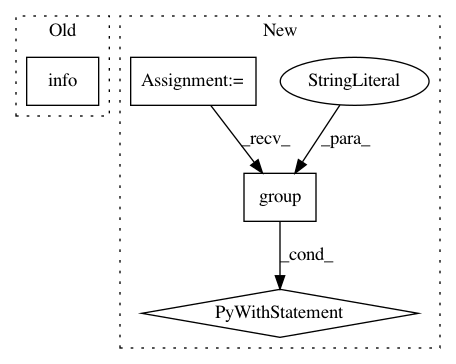

908c0c630a6c7c6e35b7bb0e172d41372bfb309d,python/ray/autoscaler/command_runner.py,SSHCommandRunner,run,#SSHCommandRunner#Any#Any#Any#Any#Any#Any#,291
Before Change
if not isinstance(port_forward, list):
port_forward = [port_forward]
for local, remote in port_forward:
logger.info(self.log_prefix + "Forwarding " +
"{} -> localhost:{}".format(local, remote))
ssh += ["-L", "{}:localhost:{}".format(remote, local)]
final_cmd = ssh + ssh_options.to_ssh_options_list(timeout=timeout) + [
"{}@{}".format(self.ssh_user, self.ssh_ip)
After Change
ssh = ["ssh", "-tt"]
if port_forward:
with cli_logger.group("Forwarding ports"):
if not isinstance(port_forward, list):
port_forward = [port_forward]
for local, remote in port_forward:
cli_logger.verbose(
"Forwarding port {} to port {} on localhost.",
cf.bold(local), cf.bold(remote)) // todo: msg
cli_logger.old_info(logger,
"{}Forwarding {} -> localhost:{}",
self.log_prefix, local, remote)
ssh += ["-L", "{}:localhost:{}".format(remote, local)]
final_cmd = ssh + ssh_options.to_ssh_options_list(timeout=timeout) + [
"{}@{}".format(self.ssh_user, self.ssh_ip)
]
if cmd:
In pattern: SUPERPATTERN
Frequency: 3
Non-data size: 4
Instances
Project Name: ray-project/ray
Commit Name: 908c0c630a6c7c6e35b7bb0e172d41372bfb309d
Time: 2020-07-22
Author: maximsmol@gmail.com
File Name: python/ray/autoscaler/command_runner.py
Class Name: SSHCommandRunner
Method Name: run
Project Name: ray-project/ray
Commit Name: 40b8e35d61982b149e88fc09effd001879649bff
Time: 2020-08-11
Author: maximsmol@gmail.com
File Name: python/ray/resource_spec.py
Class Name: ResourceSpec
Method Name: resolve
Project Name: ray-project/ray
Commit Name: 908c0c630a6c7c6e35b7bb0e172d41372bfb309d
Time: 2020-07-22
Author: maximsmol@gmail.com
File Name: python/ray/autoscaler/updater.py
Class Name: NodeUpdater
Method Name: wait_ready